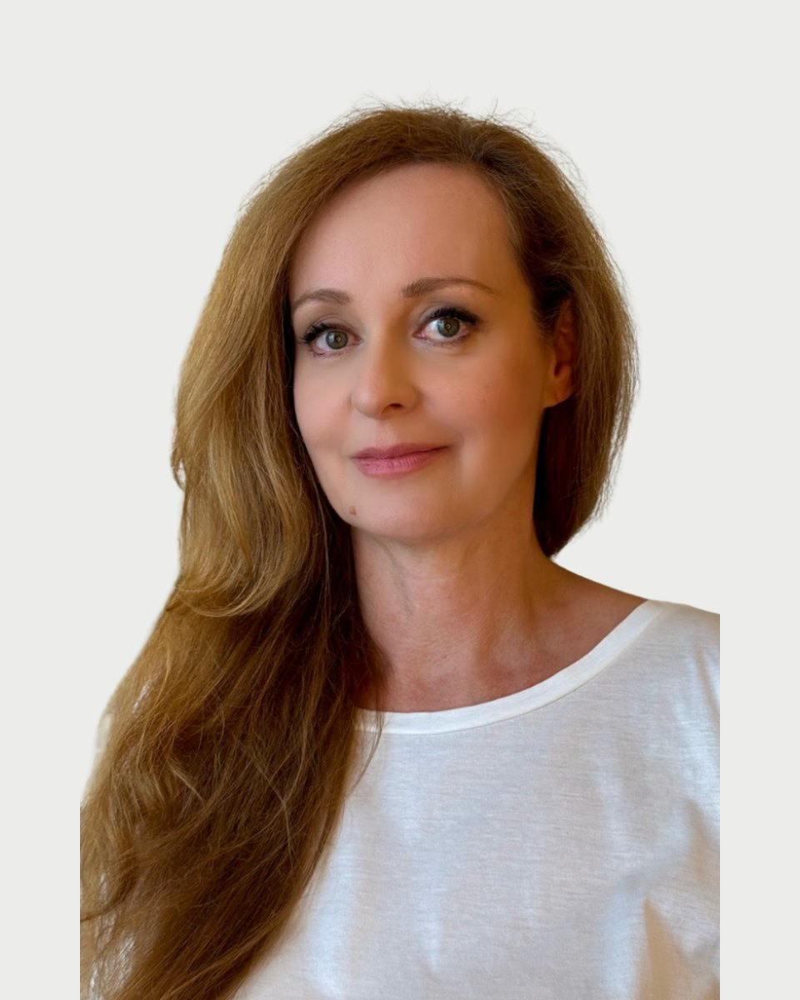

Regiszter 36 · Pszichológus
Vízkeleti
Ildikó

Amiben segítek
- Úgy érzed, állandóan túl sok van rajtad, és már nehezen bírod a mindennapok terheit;
- Gyakran feszült vagy, és szeretnél jobban megbirkózni a stresszel;
- Attól tartasz, hogy a folyamatos terhelés miatt kiégtél vagy közel kerültél hozzá;
- Elvesztetted a magadba vetett hitedet, vagy túl sokszor kételkedsz önmagadban;
- Nehezen hozol meg egy fontos döntést, és úgy érzed, elakadtál;
- Munkahelyi konfliktusok vagy vezetői kihívások nehezítik a mindennapjaidat;
- Karrierváltáson gondolkodsz, vagy nem tudod, merre indulj tovább;
- Szeretnél jobb egyensúlyt teremteni a munkád és a magánéleted között;
A legnagyobb bátorság nem az, hogy másoknak próbálunk megfelelni, hanem hogy hűek maradunk ahhoz, akik valójában vagyunk.
Rólam
Huszonöt éven át dolgoztam multinacionális vállalatok vezetőjeként. Ez idő alatt csapatokat építettem, változásokat vezettem, válsághelyzeteket kezeltem, és nap mint nap stratégiai döntéseket hoztam olyan emberekkel együttműködve, akiknek teljesítménye mögött gyakran ott volt a fáradtság, a bizonytalanság vagy az önmagukkal szembeni túl magas mérce.
Ma pszichológusként magammal hozom, amit vezetőként és emberként megtapasztaltam: ismerem a teljesítménykényszert, a felelősség súlyát, és azt is, milyen érzés elveszíteni az egyensúlyunkat, hiszen ezek számomra sem ismeretlen élethelyzetek. Szívesen fordulnak hozzám olyan felnőttek, akik stresszel, kiégés-közeli állapottal, munkahelyi nehézségekkel, önértékelési problémákkal, döntési elakadással, alkalmazkodási vagy életvezetési kérdésekkel, illetve karrierváltással küzdenek, köztük sokan olyanok, akik kívülről jól teljesítenek, mégis úgy érzik, elfáradtak, megrekedtek, vagy nem találják önmagukat a szerepükben.
Hiszek abban, hogy minden ember rendelkezik azokkal az erőforrásokkal, amelyekre a változáshoz szüksége van. A közös munkában abban szeretnék segíteni, hogy ezek felismerhetővé és valóban használhatóvá váljanak, mert számomra a változás nem önmagunk megváltoztatásával, hanem önmagunk megértésével kezdődik.
Fontos számomra, hogy a hozzám fordulók ne azt érezzék, hogy "meg kell javítaniuk magukat". Sokkal inkább abban szeretnék segíteni, hogy jobban megértsék saját működésüket, felismerjék az erőforrásaikat, és olyan döntéseket hozzanak, amelyek közelebb viszik őket egy kiegyensúlyozottabb, önazonosabb élethez.
A közös munkában nyugodt, elfogadó és biztonságos légkör kialakítására törekszem. Hiszem, hogy akkor tudunk igazán változni, amikor nem kell szerepeket játszanunk, és őszintén beszélhetünk arról, ami bennünk zajlik.
Vízkeleti Ildikó díja 15-20 ezer forint alkalmanként.
Képzés és szakmai út
A képzések és a szupervízió az akkreditált szakképzőhely rendjében folynak. Mit jelent ez Önnek
Iskolai végzettség
• Okleveles pszichológus, Szegedi Tudományegyetem, Bölcsészettudományi Kar, Pszichológia Intézet (2004,2008)
• Marketing szak, Budapesti Corvinus Egyetem, Marketing és Európai Tanulmányok Intézet (1994,2000)
• Sciences Po Paris, Institut d'Études Politiques (1999)
• University of Notre-Dame de la Paix, Erasmus-ösztöndíj, Belgium (1998)
Módszerspecifikus képzések
• Business coach képesítés, Business Coach Kft. (2009)
• Önismereti csoport, Magyar Pszichodráma Egyesület, 50 órás intenzív csoport, Szántó Eszter és Csutak Zoltán vezetésével (2026)
Egyéb képzettségek
• CBT technikák alkalmazása stresszkezelés során, kiégés-prevencióban és krízisintervencióban, VIKOTE (2026)
• Mindfulness a klinikai gyakorlatban, VIKOTE (2026)
• Francia nyelv, anyanyelvi szint
• Angol nyelv, felsőfok
Tanítómesterek
Akiknél a módszereket tanulta
- Szakmai szemléletemet elsősorban a kognitív viselkedésterápia és a sématerápia meghatározó alakjainak munkája formálta: Aaron T. Becké, a kognitív terápia megalapítójáé, és Jeffrey Youngé, a sématerápia kidolgozójáé. Emellett sokat tanultam Viktor Frankl és Carl Rogers emberközpontú szemléletéből is.
- És legalább ennyit tanultam azoktól a vezetőktől is, akikkel az elmúlt huszonöt évben együtt dolgoztam, az ő küzdelmeik, döntéseik és fejlődésük ugyanúgy alakították azt, ahogyan ma az emberi működésre tekintek.
Időpont Vízkeleti Ildikónál
Az ügyfélszolgálat hétköznap 9 és 15 óra között egyeztet. Ha bizonytalan, hogy Ön kihez tartozik, azt is megbeszéljük.
Hasonló területen dolgoznak
Három kolléga, akinek a szakterülete a legközelebb áll Vízkeleti Ildikó munkájához.